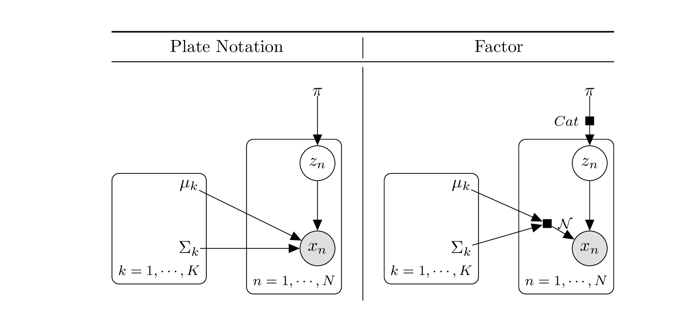

GMM learning
GMM learning#
import torch
dist = torch.distributions
import matplotlib.pyplot as plt
import seaborn as sns
import numpy as np
%matplotlib inline
from wand.image import Image as WImage
from wand.color import Color
img = WImage(filename='../pgm/gmm.pdf', resolution=400)
img.crop(500, 600, 2680, 1600)
img

K = 3
mu_1 = -1.
mu_2 = 4.
mu_3 = 10.
sigma_1 = 2.
sigma_2 = 1.
sigma_3 = 1.5
mu = torch.tensor([mu_1, mu_2, mu_3])
sigma = torch.tensor([sigma_1, sigma_2, sigma_3])
dists = dist.Normal(loc = mu, scale = sigma)
pi = torch.tensor([0.5, 0.25, 0.25])
z = dist.Categorical(probs=pi)
N = 1000
samples = {0: [], 1: [], 2: []}
all_samples = []
for n in range(N):
z_n = z.sample()
mu_n = mu[z_n]
sigma_n = sigma[z_n]
x = dist.Normal(loc = mu_n, scale= sigma_n).sample()
samples[z_n.item()].append(x.item())
all_samples.append(x.item())
for k, v in samples.items():
print(k, len(v))
0 502
1 252
2 246
sns.kdeplot(samples[0], bw_adjust=2, color='red', label='Component 1')
sns.kdeplot(samples[1], bw_adjust=2, color='green', label='Component 2')
sns.kdeplot(samples[2], bw_adjust=2, color='blue', label='Component 3')
sns.kdeplot(all_samples, bw_adjust=2, color='black', label='Mixture')
sns.despine()
plt.legend()
#sns.kdeplot(samples_n, bw_adjust=2)
<matplotlib.legend.Legend at 0x13c32b3d0>
mixture = dist.MixtureSameFamily(mixture_distribution=z, component_distribution=dists)
samples_n = mixture.sample([1000])
mixture.mixture_distribution
Categorical(probs: torch.Size([3]), logits: torch.Size([3]))
sns.kdeplot(samples[0], bw_adjust=2, color='red', label='Component 1')
sns.kdeplot(samples[1], bw_adjust=2, color='green', label='Component 2')
sns.kdeplot(samples[2], bw_adjust=2, color='blue', label='Component 3')
sns.kdeplot(all_samples, bw_adjust=2, color='black', label='Our Mixture')
sns.despine()
sns.kdeplot(samples_n, bw_adjust=2, color='purple', lw = 10, alpha=0.5, label='PyTorch Mixture')
plt.legend()
<matplotlib.legend.Legend at 0x13c757190>
to_learn_locs = torch.tensor([0.0, 1.0, 2.0], requires_grad=True)
to_learn_scales = torch.tensor([1.0, 1.0, 1.0], requires_grad=True)
to_learn_scales_softplus = torch.functional.F.softplus(to_learn_scales)
to_learn_dists = dist.Normal(loc=to_learn_locs, scale=to_learn_scales_softplus)
to_learn_mix = torch.tensor([0.3, 0.4, 0.2], requires_grad=True)
to_learn_mixture = dist.Categorical(probs=to_learn_mix)
overall = dist.MixtureSameFamily(
mixture_distribution=to_learn_mixture, component_distribution=to_learn_dists
)
def nll(loc, scale, mix):
to_learn_scales_softplus = torch.functional.F.softplus(scale)
to_learn_dists = dist.Normal(loc=loc, scale=to_learn_scales_softplus)
mix_softmax = torch.functional.F.softmax(mix)
to_learn_mixture = dist.Categorical(probs=mix_softmax)
overall = dist.MixtureSameFamily(
mixture_distribution=to_learn_mixture, component_distribution=to_learn_dists
)
return -torch.sum(overall.log_prob(samples))
opt = torch.optim.Adam([to_learn_locs, to_learn_scales, to_learn_mix], lr=0.05)
for i in range(101):
loss =nll(to_learn_locs, to_learn_scales, to_learn_mix)
if i % 10 == 0:
print(f"Iteration: {i}, Loss: {loss.item():0.2f}")
loss.backward()
# loc_array.append(theta_learn_loc)
# loss_array.append(loss_val.item())
opt.step()
opt.zero_grad()
Iteration: 0, Loss: 16368.27
Iteration: 10, Loss: 10628.43
Iteration: 20, Loss: 8328.17
Iteration: 30, Loss: 7339.84
Iteration: 40, Loss: 6849.51
Iteration: 50, Loss: 6566.24
Iteration: 60, Loss: 6376.24
Iteration: 70, Loss: 6226.55
Iteration: 80, Loss: 6086.78
Iteration: 90, Loss: 5958.18
Iteration: 100, Loss: 5888.01
/var/folders/1x/wmgn24mn1bbd2vgbqlk98tbc0000gn/T/ipykernel_48017/2345747116.py:17: UserWarning: Implicit dimension choice for softmax has been deprecated. Change the call to include dim=X as an argument.
mix_softmax = torch.functional.F.softmax(mix)
to_learn_locs
tensor([-1.6593, 6.8915, 4.1946], requires_grad=True)
to_learn_scales
tensor([1.4718, 3.8919, 2.9224], requires_grad=True)
s
tensor([0.3407, 0.3356, 0.1757], requires_grad=True)
torch.functional.F.softmax(to_learn_mix)
/var/folders/1x/wmgn24mn1bbd2vgbqlk98tbc0000gn/T/ipykernel_48017/1334526509.py:1: UserWarning: Implicit dimension choice for softmax has been deprecated. Change the call to include dim=X as an argument.
torch.functional.F.softmax(to_learn_mix)
tensor([0.3518, 0.3500, 0.2983], grad_fn=<SoftmaxBackward0>)